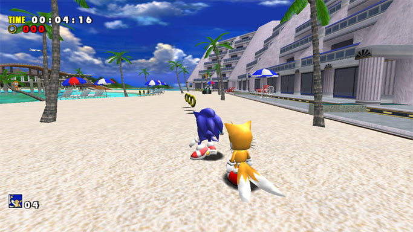
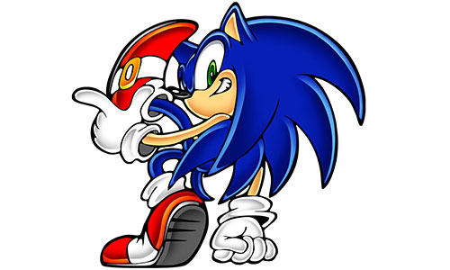
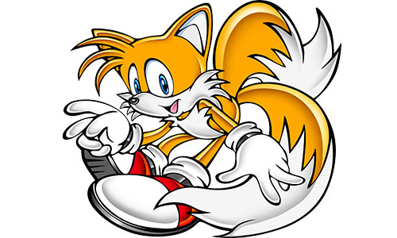
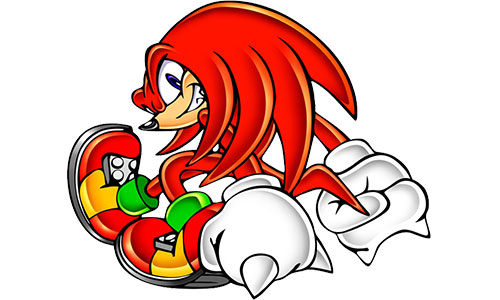
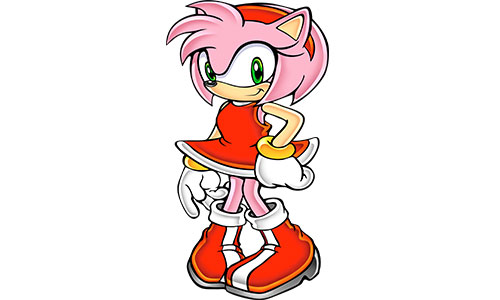
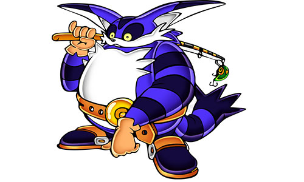
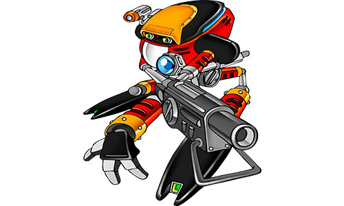
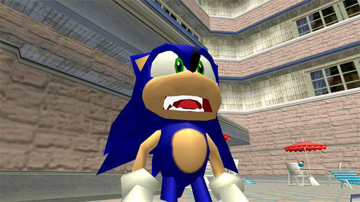

Um clássico absoluto de 1998.Após o hiato passado na quinta geração por conta do fracasso do projeto X-treme(que foi aliviado com o Sonic 3d Blast), Sonic Adventure foi originalmente foi no Dreamcast como primeiro jogo totalmente em 3d do Sonic. Alguns tempo depois lançado para Gamecube, Xbox e PC como Sonic Adventure Dx - Director's Cut com vários conteúdos adicionais. Esta versão também está disponivel para Ps3 e Xbox 360.
Diferente dos clássicos, Sonic Adventure dá um foco maior a história e dá ao jogador a possibilidade de jogar com 6 personagens, sendo que alguns momentos de suas histórias acontecem ao mesmo tempo, podendo até mesmo mudar as falas dependendo da perspectiva de quem você controla. Para terminar o jogo é necessário jogue todas as 6 histórias para liberar o final do jogo.

*Foto de Emerald Coast, primeira fase com Sonic
Cada personagens em Sonic Adventure tem seu próprio estilo de Gameplay. Sonic e Tails tem fase em que você precisa chegar até o fim para pegar uma esmeralda, libertar uma capsula de animais (no caso do Tails você deve ganhar do Sonic para cumprir essa missão).
Algumas gameplay funcionam bem se você se acostumar com a natureza travada do jogo, mas o gameplay de pescaria realmente não tem muito como defende-lo.
Deslize por cima dos personagens para ver sua história.
Sonic

Sonic está de volta e desta veio para em Station Square que está atacado pelo mais novo aliado de Robotnik: Chaos, o Deus da destruição. Esse monstro se alimenta das esmeraldas do Chaos e se conseguir todas irá se tornar invensível. Sua missão é coleta-las antes do vilão e acabar com seus planos mais uma vez.
Tails

Todo bom héroi tem o seu escudeiro, mas desta vez a história vai ser diferente. Tails retorna em Sonic Adventure para ajudar Sonic a derrotar Eggman e também provar que é capaz de se virar sozinho.As fases do Tails consistem em corridas contra o Sonic e contra o Eggman.
Knuckles

Ai vem ele,mais durão que o resto deles. Knuckles estava defendendo a Master Emerald quando um monstro de água de uma profecia antiga se libertou e destruiu a esmeralda em pedaços. Nesse aventura deve coletar os pedaços da Master Emerald espalhados pelos mundo. As fases do Knuckles consistem em pegar três pedaços da Master Emerald dentro de uma area aberta, remetendo um pouco ao jogo Sonic 3d Blast.
Amy

Fazendo seu retorno após o papel de donzela em perigo em Sonic CD, Amy aqui tem a missão de ajudar um Flicky a encontrar a sua família. Porém ela tambem terá de fugir do Robô Zero que está a perseguindo constantemente. As fases da Amy são parecidas com as fases de Sonic e Tails, porém mais lento e com a missão de escapar do Robô Zero com um balão encontrado no final da fase.
Big

Mais um dia na terra do sossêgo. As fases com o Big são minigames de pescaria onde você deve pescar o seu amigo sapo Froggy. Uma provavél razão deste gameplay diferenciado ser aplicado é o sucesso de jogo como Sega Bass Fishing e outros jogos de pesca na época.
E-102γ

Conheça E-102 γ.O Segundo Robô da linhagem E-100. Após sua criação e instruções de seu mestre, ele parte para a missão de ajudar nos propósitos de seu mestre. Porém com o tempo, ele começa a se questionar de seus reais propósitos e fica com a dificil decisão de parar seu mestre e libertar seus irmãos em sua cabeça. As fases do E102-γ são um misto de plataforma com tiro e predecessor do gameplay do Tails e Eggman em Sonic Adventure 2.
Emblemas são necessários para aqueles que desejam atingir o 100% neste jogo. Eles podem ser encontrados de várias formas:completando as fases e minigames, explorando pelo mapa ou fazendo o Mission Mode. Ao adquirir uma quantidade especificas de emblemas, é liberado alguns jogos antigos do Sonic para serem jogados e após todos os emblemas pegado o Metal Sonic é liberado para jogar no Time Trial.
Ao todos existem 130 emblemas: 96 são coletadas com misssões de fase,7 após finalizar uma campanha,10 deles são adquiridos em minigames,12 estão escondidas pelo mapa e 5 são adquiridas no Chao Garden.Não é necessário preocupação de se perder na conta de emblemas por o jogo marca quais faltam e a quantidade atual.
O Mission Mode é uma adição exclusiva da versão Dx. Consiste em missões alternativas espalhadas pela mapa e pelas fases, que só pode ser acessado no Pós Jogo de cada personagens(cada qual com suas missões próprias).No total são 60 missões.

*Umas das cutscenes mais memoráveis de Sonic Adventure
Seria hipocrisia dizer que Sonic Adventure não tem problemas, porque querendo ou não, ele não envelheceu bem. Uma grande prova disso são as cutscenes com expressões extremamente exageradas(e hilárias) dos personagens. A câmera tem grandes tendências a não funcionar corretamente e você é um alvo constante de bugs e clips. Além disso, alguns estilos de jogos como do Big ou da Amy acabam se distanciando muito do jogo, podendo ser até mesmo descartavéis por conta de suas curtíssimas campanhas.
O Dreamcast Convertion é um conjunto de mods de Sonic Adventure DX para PC que utiliza as texturas do Sonic Adventure do Dreamcast, além de corrigir alguns e aumentar a resolução da tela. Esta pode ser considerada a versão definitiva de Sonic Adventure.
Sonic Adventure DX tem problemas, tem bugs, a história chega a ser estupida. Tudo isso culmina em um jogo... legal. É certo que ele não é perfeito, mas dizer que não é divertido é uma absurdo!! Ainda mais da maneira que o Sonic e Tails funciona onde você simplesmente avança na fase. A campanha do Big é obigatória para terminar e isso é horrivel!! Mas calma são apenas 4 fases com ele, então é razoavel. Para melhor experiencia, procurem pela Dreamcast Convertion.